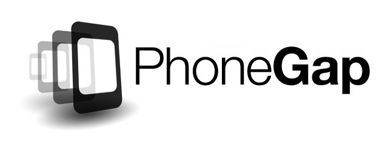
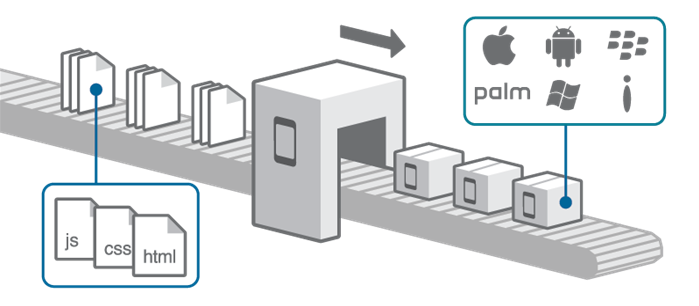

Historia

Surgido de un iPhoneDevCamp organizado por Apple en 2008 de la mano de la empresa Nitobi Software. En 2011 Nitobi fue adquirida por el gigante Adobe. Después de esta adquisición el código de PhoneGap fue donado a la Fundación Apache pasando a llamarse Apache Cordova, pudiendo ser utilizado para construir otras herramientas.
La última gran evolución de PhoneGap se produjo en 2012 con el nacimiento de PhoneGap Build, que permitía acabar con la engorrosa duplicidad de entornos de trabajo.
Juan Verde
¿Qué es PhoneGap?
PhoneGap es un paquete de librerías que permite empaquetar aplicaciones HTML5 de manera que puedan ser usadas como apps para móviles o Web Apps.
Juan Verde
Características

Las aplicaciones creadas con PhoneGap sólo pueden nutrirse de HTML, CSS y Javascript. Si requieren lógica generada por otros lenguajes de programación, deberán conseguirla de un backend a través de APIs o webservices
Ofrece un servicio en la nube llamado PhoneGap Build que permite construir rápidamente apps móviles y compilarlas con facilidad sin necesidad de SDKs, compiladores o hardware específico.
Tiene una licencia Apache 2.0
Juan Verde